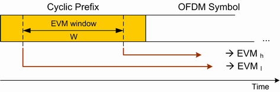
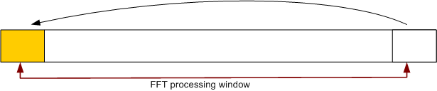

Modulation results are based on a comparison between the measured signal, corrected by the average frequency and timing offset for each measured subframe, and an ideal reference waveform.
See also: "Modulation Accuracy"
As specified in 3GPP TS 36.104, annex E, the EVM calculation is based on two different FFT processing windows in time domain, separated by the "EVM window length" W. The minimum test requirement applies to the larger of the two obtained EVM values.
The definition of the EVM window and the two FFT processing windows is shown below.

The EVM window is centered on the cyclic prefix (CP) at the beginning of the OFDM symbol. Its length is specified in the standard, depending on the channel bandwidth and the cyclic prefix type (see 3GPP TS 36.104, tables E.5.1-1 and F.5.1-2).
The CP is a cyclic extension of the OFDM symbol. As a consequence the EVM for a signal with good modulation accuracy is expected to be largely independent of the EVM window size.

EVM window length settings Use the settings in the section "Config... > Measurement Control > Modulation > EVM Window Length" to adjust the length of the EVM window (see "EVM Window Length"). The minimum value of 1 FFT symbol actually corresponds to a window of zero length so that EVMh = EVMl. |